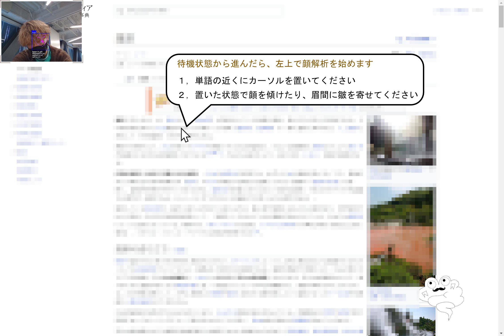
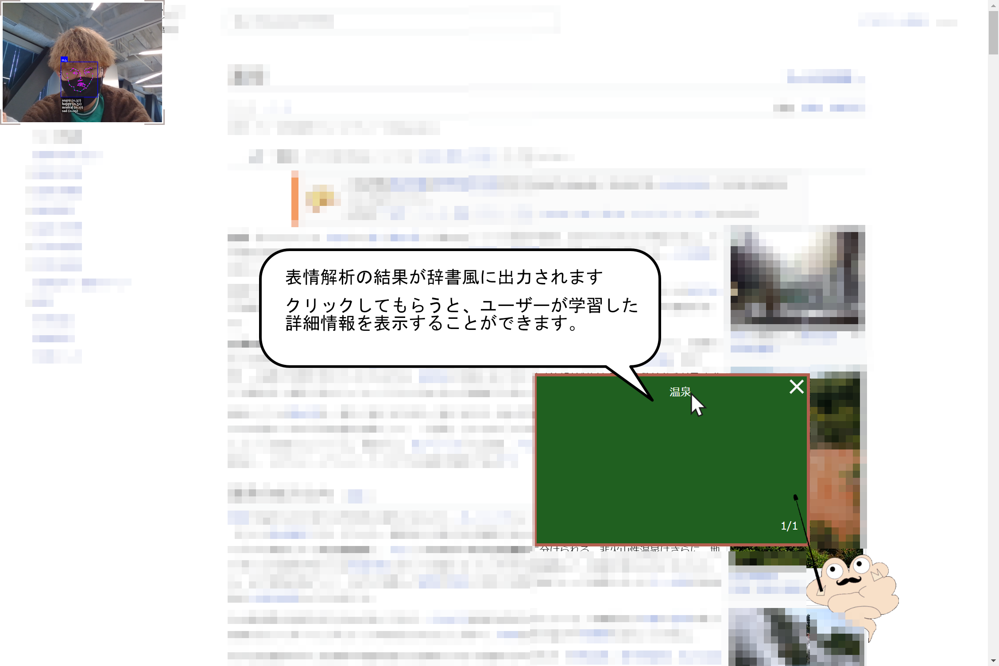

デモ機能の使い方
デモ機能概要
GoogleChromeの拡張機能を用いて、顔認識とマウスの位置取得で悩んでいる内容を取得することに成功しました。
拡張機能ダウンロード
サイトの「ダウンロード」をクリックし、「th457bbm」をダウンロードしておきます。

拡張機能セットアップ
はじめにGoogleChromeの設定画面を開きます。

次に「拡張機能」をクリックします。

デベロッパーモードがオンになっているのを確認し、「パッケージ化されていない拡張機能を読み込む」をクリックします。サイトからダウンロードした「th457bbm」を選択します。
拡張機能に追加されました。
実際に使用する
ローディング中なので顔認証が始まるまでお待ちください
wikipediaで今回のシステムを試用してみます。サイトに登場した「温泉」という言葉の意味に悩んだと仮定します。左上の表情認識で悩んでいるかを判定します。マウスの位置を見ている視点とし文章に近づけてください、その状態で顔を傾けたり眉間に皺を寄せると悩んでいる内容を判別します。
システムが学習した内容から検索候補を表示します。
検索候補をクリックするとその内容が表示されます。
試しにほかのWikipediaページを開いて悩みポーズをしてみてください。ページを学習しデータベースに登録された情報が表示されます。